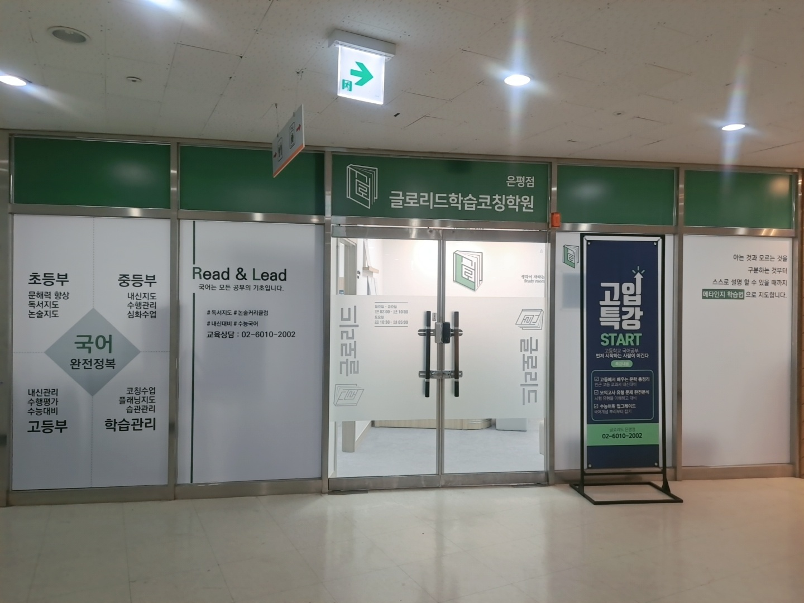
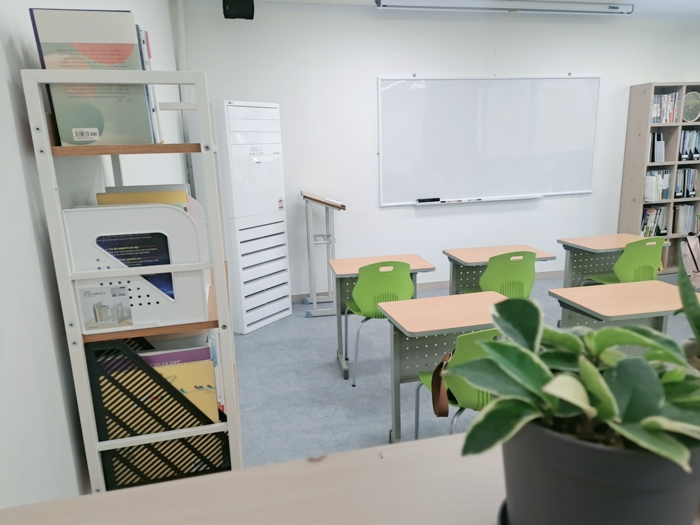
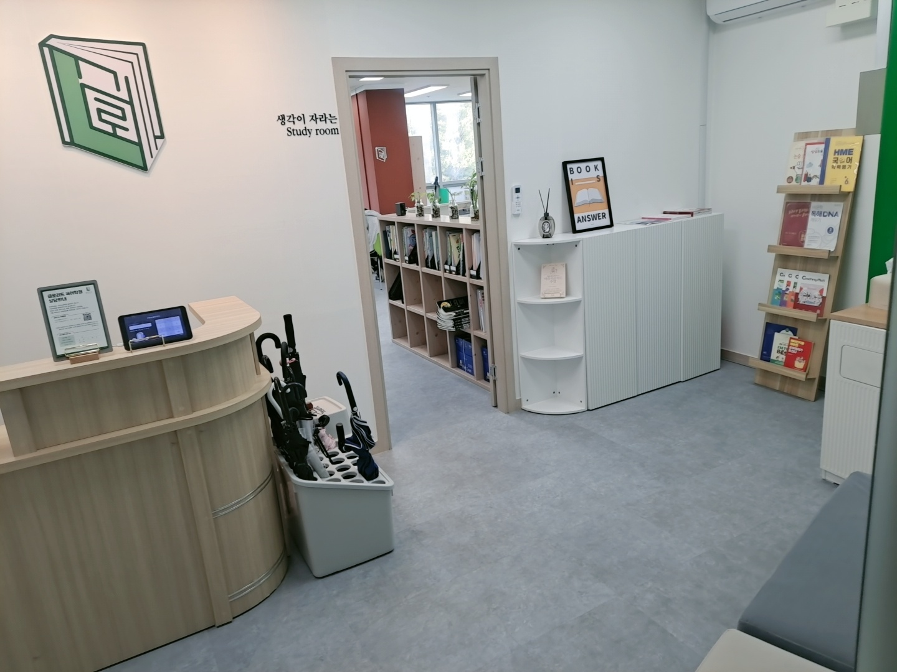
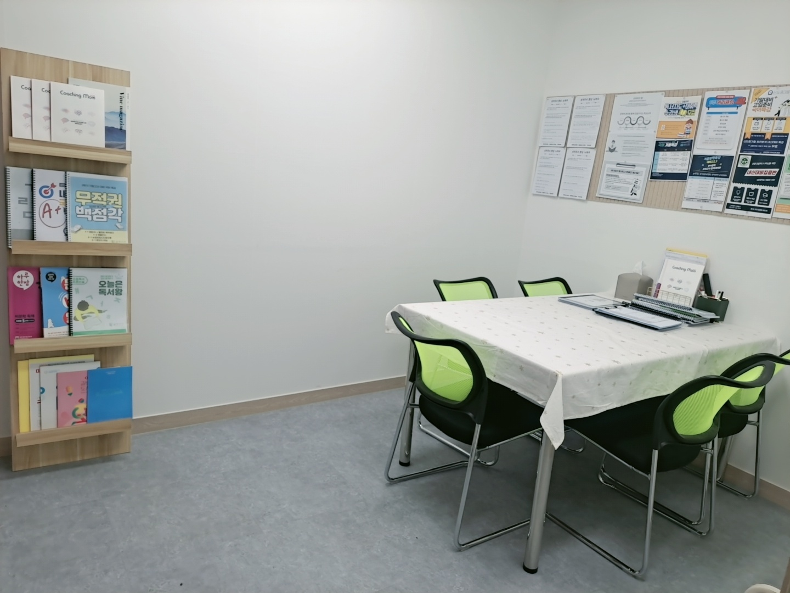

안녕하세요, 서울 은평구 진관동 진관2로에 있는 와와학습코칭 은평점(글로리드)입니다. 은평뉴타운 한가운데, 서울진관초등학교(진관초)·서울은진초등학교(은진초)·서울은빛초등학교(은빛초)·서울신도초등학교(신도초) 아이들이 걸어서 오는 자리입니다. 저희 교실은 다른 지점과 조금 다릅니다. 국어 한 과목을 붙잡고 있습니다.
위 사진은 저희 입구입니다. 유리벽에 네 칸이 나뉘어 있습니다. 초등부, 중등부, 고등부, 그리고 학습관리. 오늘은 저 네 칸을 순서대로 짚어 보려 합니다. 같은 국어인데 학년이 올라갈 때마다 요구하는 것이 완전히 달라지기 때문입니다.
첫 칸 — 초등부는 ‘점수’가 아니라 ‘읽는 양’입니다
초등부 칸에는 세 가지가 적혀 있습니다. 문해력 향상, 독서지도, 논술지도. 시험 이야기가 하나도 없습니다.
일부러 그렇게 두었습니다. 초등학교 시험은 점수 차이가 크게 벌어지지 않습니다. 그래서 이 시기 성적표는 실력을 잘 보여 주지 못합니다. 대신 눈에 안 보이는 곳에서 차이가 쌓입니다.
- 한 번에 읽어 낼 수 있는 글의 길이 — 세 문단에서 지치는 아이와 두 쪽을 끝까지 읽는 아이가 있습니다.
- 모르는 낱말을 만났을 때의 습관 — 그냥 넘기는 아이와 앞뒤로 뜻을 짐작해 보는 아이가 갈립니다.
- 읽은 뒤에 남는 것 — 재미있었다로 끝나는지, 무슨 이야기였는지 세 문장으로 말할 수 있는지.
초등에서 이 세 가지를 만들어 두면 중학교에서 편해집니다. 반대로 이 시기에 문제집만 풀면, 문제 푸는 요령은 늘지만 읽는 힘은 그대로입니다. 그래서 초등부에서는 읽고, 정리하고, 자기 말로 다시 쓰는 것까지를 한 세트로 봅니다.
둘째 칸 — 중등부에서 국어가 갑자기 ‘과목’이 됩니다

중등부 칸에는 내신지도, 수행관리, 심화수업이 적혀 있습니다. 여기서부터 국어가 점수로 계산되기 시작합니다.
중학교 국어가 어려워지는 이유는 지문이 길어져서가 아닙니다. 요구하는 답의 형태가 달라져서입니다. 초등에서는 ‘무엇을 읽었는지’를 물었다면, 중학교부터는 이렇게 묻습니다.
- 화자의 태도가 어떻게 바뀌는지 근거를 들어 쓰시오.
- 이 표현이 왜 쓰였는지 효과를 중심으로 설명하시오.
- 두 글의 관점 차이를 비교해 서술하시오.
답을 알아도 문장으로 못 옮기면 점수가 되지 않습니다. 그래서 중등부 수업에서는 읽기 다음에 반드시 쓰기가 붙습니다. 위 사진의 교실에서 아이들이 제일 많이 하는 일도 사실 문제 풀이가 아니라 한 문장으로 줄여 쓰기입니다. 길게 쓰는 것보다 정확하게 줄이는 게 훨씬 어렵습니다.
수행평가도 이 시기부터 비중이 커집니다. 수행은 벼락치기가 통하지 않는 영역이라, 언제 무엇이 나오는지 미리 아는 것만으로 절반이 해결됩니다.
셋째 칸 — 고등부는 시간과의 싸움으로 바뀝니다
고등부 칸에는 내신관리, 수행평가, 수능대비가 적혀 있습니다. 중등부와 항목이 비슷해 보이지만 성격이 다릅니다. 고등 국어는 실력 문제이기 전에 시간 문제이기 때문입니다.
내신은 배운 지문 안에서 나오니 깊게 파야 하고, 수능 국어는 처음 보는 지문을 정해진 시간 안에 처리해야 합니다. 이 둘은 공부 방법이 서로 반대에 가깝습니다. 한쪽만 하다가 다른 쪽에서 무너지는 경우를 자주 봅니다.
그래서 고등부에서는 학기 중과 방학의 역할을 나눠 둡니다. 학기 중에는 학교 지문과 수행평가를 중심으로, 방학에는 낯선 지문을 시간 재고 읽는 쪽으로. 순서를 섞으면 둘 다 어정쩡해집니다.
넷째 칸 — 학습관리가 왜 국어 학원에 붙어 있을까요

네 번째 칸에는 코칭수업, 플래닝지도, 습관관리가 적혀 있습니다. 국어 전문 교실에 학습관리 칸이 붙어 있는 게 의아하실 수 있습니다.
이유는 단순합니다. 국어는 수업 시간에 실력이 느는 과목이 아니기 때문입니다. 수업에서는 읽는 방법을 배우고, 실력은 혼자 읽는 시간에 붙습니다. 그 시간이 확보되지 않으면 아무리 좋은 수업도 그날로 끝납니다.
그래서 저희는 수업 뒤에 무엇을 언제 할지를 같이 정합니다. 사진 속 ‘생각이 자라는 Study room’이 그 자리입니다. 오늘 배운 지문을 다시 읽고, 정리하고, 안 풀린 부분을 표시해 두는 곳입니다.
입구 벽 오른쪽 끝에는 이런 문장도 붙어 있습니다. “아는 것과 모르는 것을 구분하는 것부터, 스스로 설명할 수 있을 때까지.” 국어에서 가장 흔한 착각이 ‘읽었으니 안다’입니다. 눈으로 지나간 것과 설명할 수 있는 것은 전혀 다릅니다. 그 간격을 좁히는 일이 학습관리 칸이 하는 일입니다.
상담실에서 저희가 먼저 여쭙는 것

국어 상담을 오시면 부모님들께서 대개 성적표를 먼저 꺼내십니다. 물론 봅니다. 다만 저희가 그보다 먼저 여쭙는 질문이 따로 있습니다.
- “집에서 아이가 마지막으로 끝까지 읽은 책이 무엇인가요?” — 제목보다 ‘끝까지’가 중요합니다.
- “틀린 문제를 물어보면 뭐라고 하나요?” — ‘몰라서’와 ‘헷갈려서’와 ‘시간이 없어서’는 처방이 전부 다릅니다.
- “국어 숙제를 할 때 얼마나 걸리나요?” — 걸리는 시간이 읽는 속도를 그대로 보여 줍니다.
이 세 가지 답을 들으면 어느 칸에서 시작해야 할지가 대체로 정해집니다. 초등 고학년인데 읽는 양이 부족하면 중등 문제집부터 나가도 소용이 없고, 중학생인데 서술형에서만 점수를 잃으면 지문을 더 읽는 것보다 쓰는 연습이 급합니다. 같은 국어 수업이라도 출발점이 다릅니다.
집에서 오늘부터 해 보실 수 있는 세 가지
- 읽은 뒤에 세 문장으로 말하게 해 보세요. 누가, 무엇을, 그래서 어떻게 됐는지. 이게 막히면 읽기가 아니라 훑기였던 것입니다.
- 모르는 낱말을 바로 알려 주지 마세요. 앞뒤 문장을 다시 읽고 짐작하게 한 다음에 확인하는 순서가, 사전을 먼저 펴는 것보다 오래 남습니다.
- 교과서를 소리 내어 읽는 시간을 하루 5분만 만들어 주세요. 눈으로만 읽을 때 건너뛰던 부분이 소리 내면 걸립니다. 그 걸리는 지점이 아이가 모르는 지점입니다.
서울 은평구 진관동 은평뉴타운에서 와와학습코칭 은평점(글로리드)이 아이들과 함께하고 있습니다. 서울진관초등학교·서울은진초등학교·서울은빛초등학교·서울신도초등학교에 다니는 아이가 국어에서 유독 힘들어한다면, 입구 네 칸 중 어디에서 출발해야 하는지부터 같이 짚어 보시면 좋겠습니다.
※ 이 글의 사진은 와와학습코칭 은평점(글로리드)에서 촬영한 것으로, 촬영 시점과 현재 모습이 다를 수 있습니다. 개설 과정과 운영 시간, 수업 구성은 센터 사정에 따라 달라질 수 있으니 방문 전에 센터로 문의해 주시기 바랍니다. 인근 학교 목록은 센터 안내 자료를 기준으로 했으며, 배정 학교는 거주지와 학년도에 따라 달라집니다.